Петя и красная шапочка
Владимир Сутеев
Больше всего на свете Петя любил сказки.
Ну, и что тут такого? Все мальчишки любят сказки, только почему-то стесняются в этом признаваться. Можно подумать, сказки только для одних девчонок пишутся.
Самыми любимыми были у Пети сказки Шарля Перро. А «Красную Шапочку» он уже давно знал просто наизусть!
Однажды Петя гулял в городском саду и вдруг увидел афишу: «Сегодня мультфильм! «Красная Шапочка»».
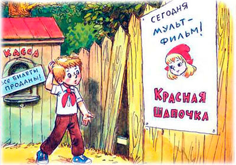
Петя даже подпрыгнул от радости и скорее побежал к кассе летнего кинотеатра. Но на кассе было написано: «Все билеты проданы!» Петя чуть не заплакал от досады и сердито пнул ногой забор, которым был огорожен кинотеатр. Будто забор был виноват в том, что в кассе нет билетов.
И тут произошло что-то невероятное: доска забора отодвинулась, словно приглашая Петю внутрь кинотеатра. Петя раздумывал всего мгновенье, а затем шмыгнул в лаз. И доска за ним закрылась без шума и скрипа.
Пробираясь в кромешной темноте, то и дело натыкаясь на какие-то коробки, Петя мечтал поскорей очутиться перед экраном, чтобы не пропустить начало мультфильма. И вдруг экран возник прямо перед ним. На нём - на экране - вспыхнули и засветились непонятные слова «акчопаШ яансарК». Петя прочитал их слева направо, потом справа налево и понял, что это название фильма «Красная Шапочка». Значит, он оказался за экраном. Петя стал обходить экран и неожиданно очутился... на лесной полянке.
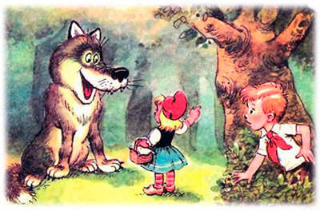
Он ещё не успел толком понять, что произошло, как на ту же самую полянку вышла маленькая девочка в красной шапочке и с корзинкой в руках.
«Наверное, я попал на сцену театра, а не на мультик, - подумал Петя. - Тогда, значит, лес это декорации, а Красная Шапочка - артистка». Но тут из-за «декораций» на полянку выскочил настоящий волк и очень натурально облизнулся, обнажив длинные и острые клыки.
- Здравствуй, Красная Шапочка! Куда идёшь? - спросил Волк хриплым басом.
- Я иду к моей бабушке, - ответила Красная Шапочка вежливо.
- А где живёт твоя бабушка? - поинтересовался Волк.
- Молчи! Молчи! - зашептал Петя. Он сидел за кустом, и ни Волк, ни Красная Шапочка его не видели.
- Вот за тем лесом, возле мельницы, - махнула Красная Шапочка рукой.
- До чего же болтливы эти девчонки! - рассердился Петя и решительно шагнул из своего укрытия.
Но поздно. Волк уже мчался во всю свою волчью прыть к домику бабушки.
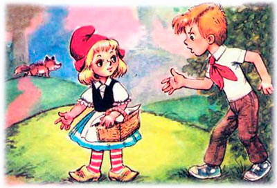
- Что ты наделала! - крикнул Петя. - Теперь Волк слопает твою бабушку!
Красная Шапочка обернулась и удивлённо посмотрела на Петю.
- Здравствуйте, - вежливо сказала Красная Шапочка. - Вы откуда?
Петя смутился и тоже поздоровался:
- Здравствуй.
- Вы, наверное, принц? - спросила девочка.
- Нет, я - Петя Иванов. А ты - Красная Шапочка. Я про тебя сказку читал. У нас все ребята эту сказку наизусть знают.
- Какую сказку? - удивилась Красная Шапочка.
Петя понял, что всё ей объяснять - только время терять, поэтому закричал изо всех сил:
- Ни о чём не спрашивай, беги скорее за охотниками! Зови к дому бабушки!
- Но мне нужно бабушке пирожок передать и горшочек масла, - Красная Шапочка показала Пете свою корзинку.
- Если сейчас же не побежишь за охотниками, то пирожок твоей бабушке уже не понадобится! - продолжал командовать Петя.
Красная Шапочка ойкнула от страха, потом послушно закивала головой и побежала по лесной тропинке к охотничьей сторожке. А Петя бросился догонять Волка.
Конечно, две ноги не сравнить с четырьмя лапами. Но Пете очень хотелось спасти бабушку, и поэтому он бежал как олимпийский чемпион. И ему удалось догнать Волка возле самой мельницы.
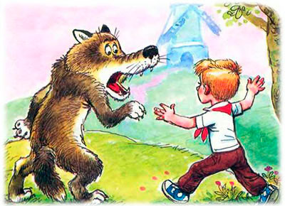
- Эй, Волк! - закричал Петя, задыхаясь от быстрого бега. - Остановитесь!
- Ещё чего! - довольно-таки невежливо буркнул Волк на бегу.
- Подождите! - крикнул Петя. - Я хочу сказать вам что-то очень важное!
Волк неожиданно остановился как вкопанный.
- В чём дело? - злобно спросил он. - Ты хочешь, чтобы я съел тебя?
- Не успеете! Вам спасаться надо! Сюда охотники идут! - сказал Петя.
- Да? - недоверчиво спросил Волк.
- Точно! Я сам... - И тут Петя чуть не сказал, что послал за ними Красную Шапочку, но вовремя спохватился. - Я сам видел! С ружьями идут. Прямо вам навстречу. Лучше вам идти кругом.
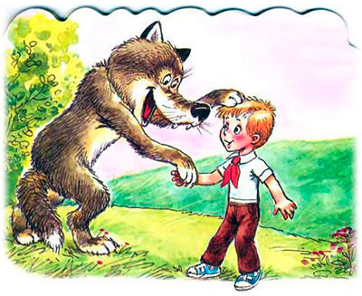
- Ну, ладно, - Волк прыгнул в кусты. - Только смотри: обманешь - без соли съем! И без перца!
Серый волчий хвост мелькнул за деревьями и исчез в густом лесу.
Петя вздохнул с облегчением и побежал к домику бабушки. Надо же предупредить и спасти старушку от свирепого волка.
Бабушка, как и положено было ей по сказке, лежала в кровати и вязала чулок.
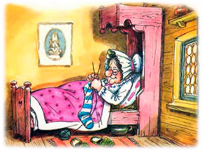
Петя постучал в дверь.
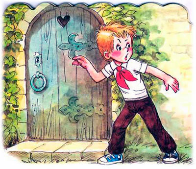
- Кто там? - спросила бабушка.
Петя тяжело вздохнул и соврал:
- Это я, Красная Шапочка.
А что ему оставалось делать? Не объяснять же старушке, кто он такой на самом деле. Во-первых, не поверит. Во-вторых, испугается. А то ещё и в обморок упадёт!
- Дёрни за верёвочку, дитя моё, дверь и откроется, - услышал Петя из-за двери знакомую ему по сказке фразу.
Петя дёрнул за верёвочку, вошёл в дом и прямо с порога закричал:
- Прячьтесь скорее! Здесь рядом Волк бродит, хочет вас слопать!
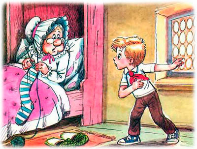
Бабушка сняла очки, внимательно посмотрела на Петю и сказала:
- Фи, молодой человек, что за выражение - «слопать»? Воспитанные люди говорят в подобных случаях: скушать, съесть, проглотить, в конце концов.
«И она сказку не читала», - огорчённо подумал Петя. А вслух сказал:
- Уважаемая бабушка, спешу вам сообщить, что рядом с вашим домом в настоящий момент находится крупный серый хищник из семейства псовых, который вполне может вас скушать, если только...
- А-а-а!!! - вдруг громко закричала бабушка и, соскочив с кровати, прыгнула в шкаф.
Петя едва успел захлопнуть за бабушкой дверцу шкафа, как раздался стук в дверь.
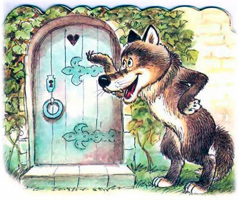
Петя осторожно раздвинул шторы и увидел на крыльце серый хвост.
- Кто там? - спросил Петя, стараясь говорить бабушкиным голосом.
- Это я, внучка ваша, Красная Шапочка, - забубнил Волк.
Петя быстро бросил на кровать какой-то узел, прикрыл его одеялом, а на подушку положил клубок ниток, нацепив на него очки и бабушкин чепчик.
- Дёрни за верёвочку, дитя моё, - говорил при этом Петя, - дверь и откроется.
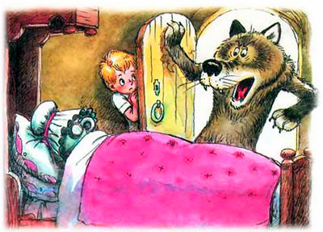
Дверь распахнулась, Волк влетел в комнату, а Петя, напротив, шмыгнул за порог.
Волк в один прыжок оказался возле кровати и проглотил чучело бабушки.
- Фу, какая гадость! - сказал Волк, выплёвывая очки. - До чего же невкусные старушки нынче пошли!
И бабушка в шкафу тихо икнула от страха.
- Надеюсь, внучка послаще будет, - сказал сам себе Волк, укладываясь в бабушкину кровать.
Петя в это время снял с верёвки бабушкин платок, повязал его, стараясь походить на девочку, и решительно постучал в дверь.
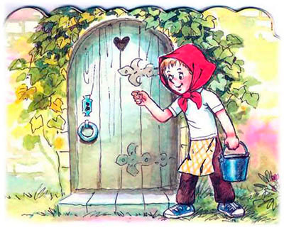
- Кто там? - пробасил из комнаты Волк.
- Это я... Красная Шапочка! - ответил Петя.
- Потяни, деточка, за верёвочку, дверь и откроется, - разрешил Волк.
Петя дёрнул за верёвочку и несмело вошёл в дом.
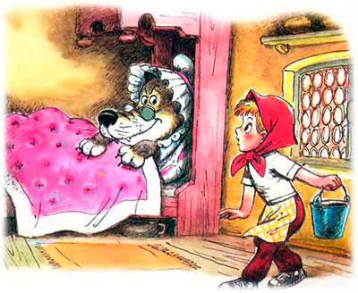
- Ой, это ты, что ли, моя внучка? - изумился Волк, разглядывая Петю.
- Я! - подтвердил Петя.
- А шапочку куда дела? - подозрительно спросил Волк.
- Теперь шапочки не в моде, нынче все девочки косынки носят, - успокоил Петя Волка.
- Ладно, носи косынку, - разрешил Волк. - Да, а ты чего там стоишь-то? Ты поближе подойди, я же глухая совсем, слышу плохо.
Петя опасливо приблизился к кровати.
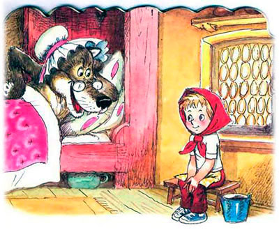
- Ну, - нетерпеливо облизнулся Волк.
- Что? - спросил Петя, с надеждой поглядывая на открытую дверь - вдруг охотники уже на крыльцо поднимаются. Но на крыльце по-прежнему было пусто.
- «Что-что!» - передразнил Волк. - А скажи мне, деточка, почему у меня такие большие ушки?
- Ушки? Это, наверное, чтобы лучше слышать, как идут охотники, - ответил Петя.
- А почему у меня такие большие глазки? А?
- Чтобы лучше видеть охотников...
- Охотников? Опять ты об охотниках! - злорадно усмехнулся Волк. Он уже давно догадался, что перед ним не Красная Шапочка. Он снял бабушкины очки и закричал:
- А теперь скажи, несчастный мальчишка, почему у меня такие большие зубки? Чтобы тебя съесть! Я же предупреждал, что съем тебя без соли и перца.
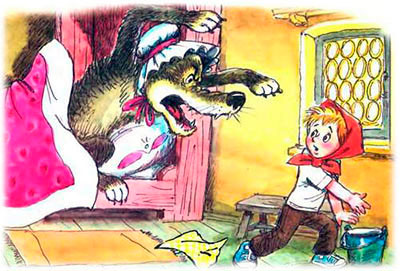
Волк откинул одеяло, оскалил свои ужасные клыки и с рычанием бросился на Петю. Петя схватил ведро, которое стояло возле порога, и нахлобучил его на голову Волку. Волк завыл и заскрежетал зубами. Петя кинулся к двери, Волк метнулся за ним.
И тут, к счастью, бабушка, сидевшая в шкафу и дрожавшая от страха, пришла в себя, приоткрыла дверцу и подставила Волку подножку.
Волк растянулся на полу, ведро с его головы соскочило, и Волк увидал прямо перед своим носом... дуло ружья!
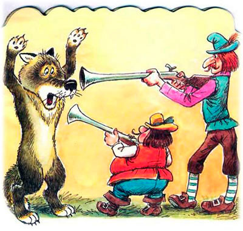
Это охотники вовремя подоспели.
- Руки, то есть лапы вверх! - скомандовали отважные охотники.
Волк безропотно встал и поднял лапы вверх.
Тут в дом вбежала Красная Шапочка, она посмотрела на пустую кровать бабушки и расплакалась:
- Где же моя бабушка? Неужели Волк её слопал?
- Фи, что за выражение - «слопал»? - копируя бабушку, произнёс Петя. - Воспитанные девочки говорят: скушал или отобедал.
- А вот мы сейчас ему брюхо вспорем и посмотрим, чем он успел отобедать! - пообещал один из охотников, вынимая острый охотничий нож.
- Да ладно уж, не надо, - пожалел Петя Волка и широко распахнул дверцы шкафа.
В шкафу стояла улыбающаяся и совершенно живая бабушка. Красная Шапочка бросилась в объятия бабушки. А потом все они: и бабушка, и Красная Шапочка, и охотники - начали хором благодарить Петю.
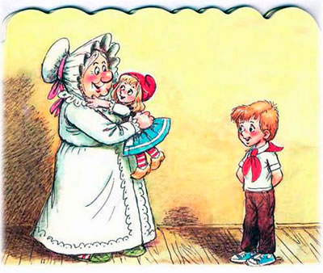
- Да ну! - засмущался Петя, но что ни говори, ему было приятно всё это слушать.
Вдруг свет в домике бабушки погас. И всё куда-то исчезло. Остался лишь тёмный экран с непонятными светящимися словами «амьлиф ценоК». Петя, конечно, догадался, что они означают «Конец фильма». Ведь он находился за обратной стороной экрана. Он оглянулся и увидел, как в заборе отодвигается доска, словно приглашая его наружу. Петя не заставил себя ждать. Когда доска за ним закрылась без шума и скрипа, он вприпрыжку побежал домой. Настроение у него стало просто замечательное. Ещё бы! Ведь не каждый день удаётся побывать в любимой сказке. Тем более что сказки Петя любил больше всего на свете. И слушать, и сочинять!